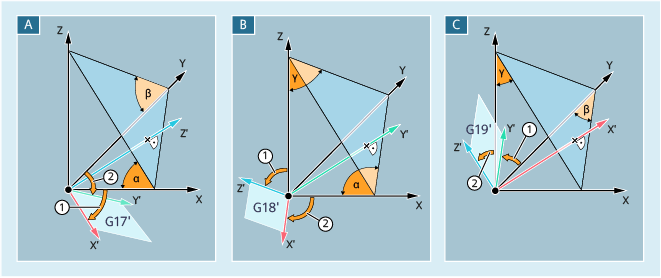

Rotations of the workpiece coordinate system (WCS) can be specified in solid angles using ROTS, AROTS and CROTS commands. Solid angles are the angles formed by the intersections of the plane rotated in space with the main planes of the WCS not yet rotated.
The WCS rotation allows the machining plane to be aligned parallel to the inclined plane that is shown. The position of the zero point of the WCS remains unchanged.
The orientation of the rotated WCS is defined so that the first rotated axis lies in the plane formed by this and the 3rd axis of the original coordinate system.
α, β, γ | Solid angle | |
A | Aligning the G17 plane parallel to the inclined plane | |
① | First rotation Rotation of X around Y through angle α ⇒ X' axis parallel to the inclined plane | |
② | Second rotation Rotation of y' around x' through β ⇒ Y' axis parallel to the inclined plane ⇒ Z' axis parallel to the inclined plane ⇒ G17 parallel to the inclined plane | |
B | Aligning the G18 plane parallel to the inclined plane | |
① | First rotation Rotation of Z around X through the angle γ ⇒ Z' axis parallel to the inclined plane | |
② | Second rotation Rotation of X' around Z' through angle α ⇒ X' axis parallel to the inclined plane ⇒ Y' axis parallel to the inclined plane ⇒ G18 parallel to the inclined plane | |
C | Aligning the G19 plane parallel to the inclined plane | |
① | First rotation Rotation of y around z through the angle β ⇒ Y' axis parallel to the inclined plane | |
② | Second rotation Rotation of Z' around Y' through angle γ ⇒ Z' axis parallel to the inclined plane ⇒ X' axis parallel to the inclined plane ⇒ G19 parallel to the inclined plane | |
The position of a plane in space is clearly defined by two solid angles. The plane would be "over-defined" by the specification of a third solid angle. It is therefore not permitted.
If only one solid angle is programmed, then the rotation of the WCS is identical to ROT/AROT.
As a result of the two programmed axes, a plane is defined according to the plane definitions for G17/G18/G19. This defines the sequence of the coordinate axes (1st axis / 2nd axis of the plane) or the sequence of the rotations through the solid angles:
Plane | 1st axis | 2nd axis |
|---|---|---|
G17 | X | Y |
G18 | Z | X |
G19 | Y | Z |
1st rotation: X around Y through the angle α
2nd rotation: Y around X' through the angle β
Orientation: X' is in the original Z/X plane.
1st rotation: Z around X through the angle γ
2nd rotation: X around Z' through the angle α
Orientation: Z' is in the original Y/Z plane
1st rotation: Y around Z through the angle β
2nd rotation: Z around Y' through the angle γ
Orientation: Y' is in the original X/Z plane.
| Absolute WCS rotation with solid angles | |
Reference frame: | Programmable frame $P_PFRAME | |
Alone in the block: | Yes | |
| Additive WCS rotation with solid angles | |
Reference frame: | Programmable frame $P_PFRAME | |
Alone in the block: | Yes | |
| Absolute frame rotations with solid angles, | |
Reference frame: | Programmable frame $P_... | |
Alone in the block: | Yes | |
| Geometry axis identifiers As example, the following definitions should apply:
| |
| Solid angle referred to the appropriate geometry axis:
| |
| Notice |
Absolute frame instructions delete all programmed framesIf a programmable frame builds on existing frames, then the additive frame instruction should be programmed instead of the absolute frame instruction. |
See also:
Programmable rotation with solid angles (ROTS, AROTS, CROTS): More information
Programmable frames (overview)